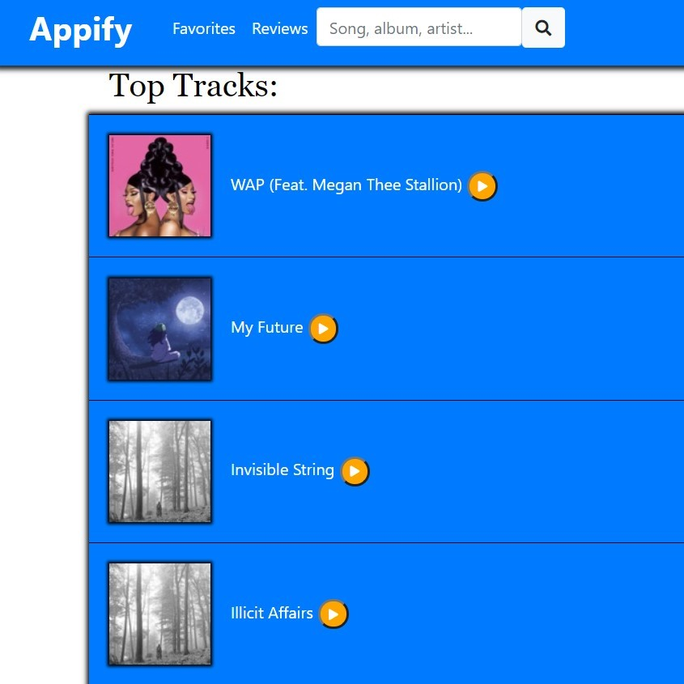
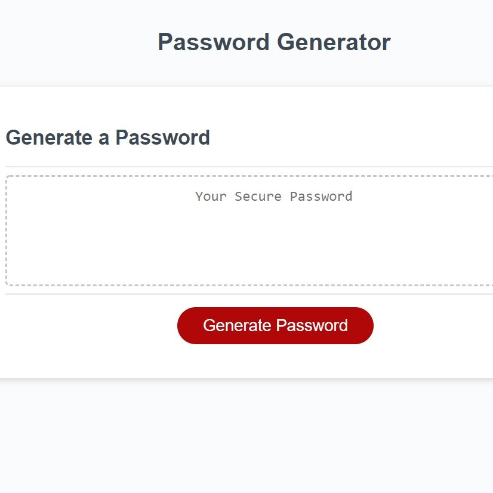
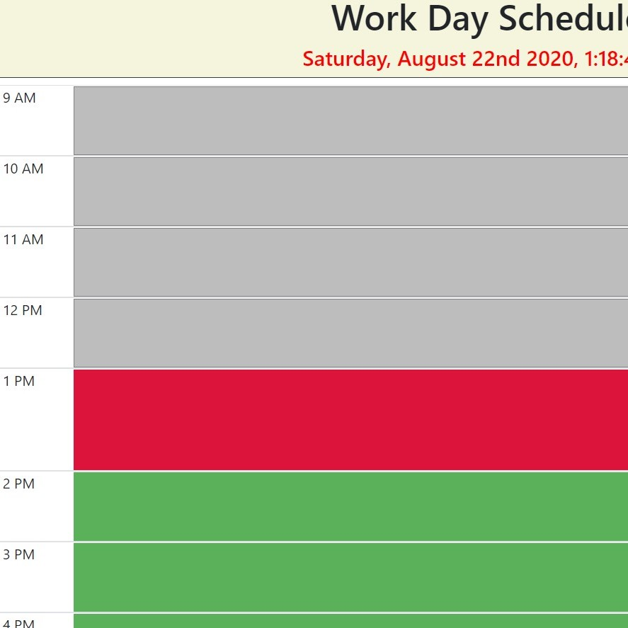
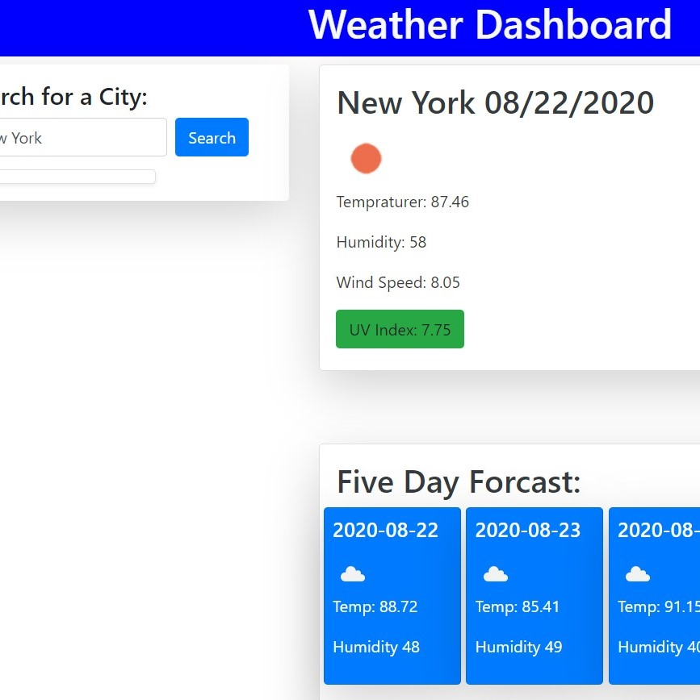

This is the first project I have worked on in my coding career. It utilizes APIs to show
users top music tracks and also allows users to search for media. There is a review page and a
working profile page. While logged into your profile you can add media to your favorites.
Click here to explore my first project.

One of the first assignments I worked on was a password generator that uses prompts to
collect your preferences. Then it displays a passord using those conditions. Click here to
get a randomly generated password.
Password Generator
Code Quiz

This is a simple day scheduler that will update based on what time it is. Grey is a past hour, red is the current hour, and green means a future hour. You can type notes about that hour slot and they will save.
Click here to plan
your day out.
Day Scheduler

This is a very simple to use weather dashboard. Simply type in your desired city and it will give you all the weather information at the time. It also includes a simple five day forecast. Click here to see what the weather is like.